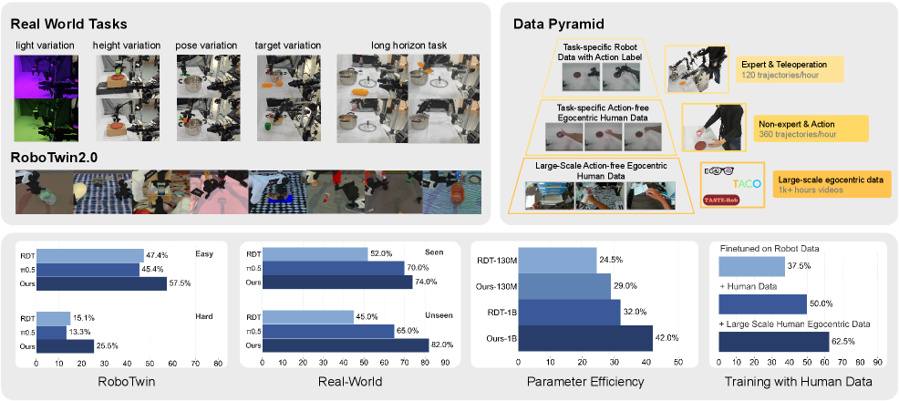
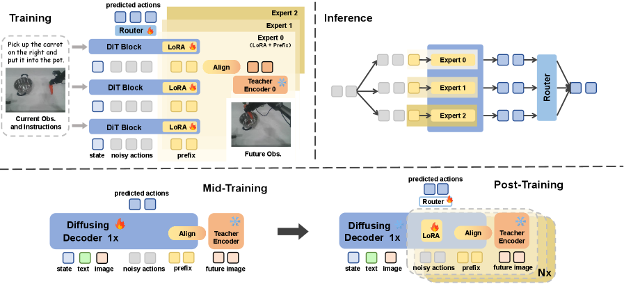
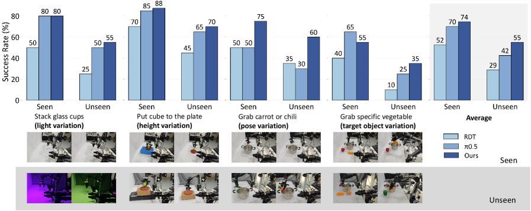
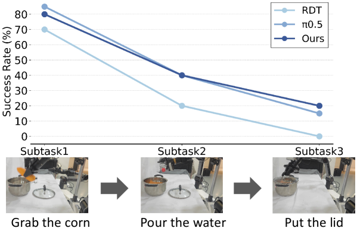
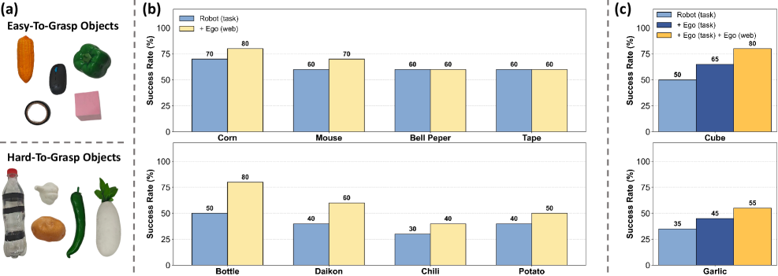

FRAPPE: Infusing World Modeling into Generalist Policies via Multiple Future Representation Alignment
1. 论文速览
| 阅读定位项 | 内容 |
|---|---|
| 论文要解决什么 | 显式 world model 需要预测未来像素，容易过度关注 pixel-level reconstruction，并且推理时依赖预测未来观测会累积误差；单一 latent alignment 又可能受单个视觉任务的归纳偏置限制。 |
| 作者的方法抓手 | 用 learnable future prefix 对齐未来 observation 的 VFM embedding；mid-training 用 Theia-style distilled encoder 单流全参适配，post-training 用 Mixture-of-Prefix-and-LoRA 并行对齐多个 VFM，再由 router 聚合动作。 |
| 最重要的结果 | RoboTwin 2.0 八任务平均：Easy 57.5%、Hard 25.5%，均为最高；真实双臂 AgileX 任务中 unseen settings 表现强，长程三阶段任务 RDT 为 0%，FRAPPE 为 20%。 |
| 阅读时要注意的点 | FRAPPE 与 FLARE 相近但更强调 multiple future representation alignment 与 parallel progressive expansion；它训练时使用多个 teacher VFM，推理时不再调用这些 VFMs，而保留并行专家计算图。 |
难度评级
4/5。需要理解 diffusion/DiT policy、RDT、LoRA、MoE/router、future representation alignment、visual foundation model teacher，以及 robot data 与 human egocentric data 的混合训练。
关键词
VLA；RDT；Implicit World Modeling；Future Representation Alignment；Prefix Tuning；LoRA；Mixture of Experts；Human Egocentric Videos；RoboTwin
核心贡献清单
- Multiple future representation alignment。不只对齐一个未来视觉表示，而是在 post-training 中并行对齐 CLIP、DINOv2、ViT 三种 VFM 表示，降低单一表示归纳偏置。
- Parallel progressive expansion。先用 mid-training 让模型适配 world-modeling 目标，再用 Prefix+LoRA 多专家并行扩展，避免直接并行训练收敛慢和性能差。
- 参数高效 post-training。共享冻结 RDT backbone，每个专家有自己的 future prefix 和 LoRA，动作由 router 聚合。
- 可利用无动作人类视频。对 action-free samples 省略 action loss，只优化未来表示对齐 loss，使 human egocentric data 能参与训练。
- 仿真与真实验证。覆盖 RoboTwin Easy/Hard、RDT-1B 与 RDT-130M、小数据训练、真实双臂移动机械臂和长程任务。

2. 动机
2.1 要解决什么问题
VLA 和 diffusion policy 已经能学习多模态动作分布，但机器人执行复杂任务时仍需要理解环境动态，也就是 world modeling。已有方法常把 world modeling 具体化为“预测未来图像”，再把该预测用于动作生成或辅助训练。
论文指出这条路有两个问题：第一，未来像素预测把大量计算花在冗余纹理和背景细节上，而不是任务相关物体信息；第二，推理阶段依赖模型生成的未来观测，若预测错误会沿时间累积，影响动作。
2.2 已有方法的局限
显式未来图像方法，如联合生成 future frames/actions 的模型，在 OOD 场景中可能图像生成质量差。隐式 alignment 方法，如 FLARE/VPP/representation alignment，避免了显式生成，但如果只对齐单一视觉 representation，就可能继承该视觉任务的偏置，不一定适配所有机器人任务。
FRAPPE 的核心动机是：world modeling 不必预测图像本身，也不应被单一 representation 限死；模型可以同时向多个视觉基础模型的未来 representation 对齐，并在推理时通过多流并行计算获得 scaling benefit。
2.3 本文的解决思路
FRAPPE 使用两阶段 recipe：
- Mid-training：单流、全参数 fine-tuning，加入 future prefix，对齐一个由多 VFM 蒸馏得到的 Theia-style tiny teacher encoder，使 RDT 适配 world-modeling 目标。
- Post-training：冻结共享 backbone，只训练多个 future prefix 和对应 LoRA；每个专家对齐一个独立 teacher encoder，最后由 router 聚合专家输出生成动作。
4. 方法详解

4.1 Preliminaries: RDT
RDT 建模条件动作序列分布 $p_\theta(\mathbf{a}_t|\mathbf{o}_t,l)$。给定语言 $l$、观测 $\mathbf{o}_t$、带噪动作 $\tilde{\mathbf{a}}_t$ 和 diffusion timestep $k$，DiT 去噪网络 $f_\theta$ 预测 clean action chunk。
RDT 原始目标：把 noisy action chunk 去噪成真实动作 chunk。
$$\mathcal{L}_{action}=\mathrm{MSE}\left(\mathbf{a}_t,f_\theta(l,\mathbf{o}_t,\tilde{\mathbf{a}}_t,k)\right)$$ $$\tilde{\mathbf{a}}_t=\sqrt{\bar{\alpha}_k}\mathbf{a}_t+\sqrt{1-\bar{\alpha}_k}\epsilon,\quad \epsilon\sim\mathcal{N}(0,I)$$| $\mathbf{o}_t$ | 当前视觉观测。 |
| $l$ | 语言指令。 |
| $\tilde{\mathbf{a}}_t$ | diffusion timestep $k$ 下的 noisy action chunk。 |
| $f_\theta$ | RDT 的 DiT backbone，条件化 SigLIP 视觉 tokens 和 T5 语言 tokens。 |
4.2 Future Prefix Alignment
FRAPPE 在 RDT 输入序列中加入 learnable future prefix $\mathbf{p}\in\mathbb{R}^{n\times d}$。模型不仅输出动作，还输出 prefix 对应的未来表示预测：
future prefix 让原本只负责动作去噪的 RDT，同时在内部学习未来状态 representation。
$$\mathbf{a}_t,\mathbf{p}_t=f_\theta(l,\mathbf{o}_t,\tilde{\mathbf{a}}_t,k)$$ $$\mathbf{e}_{t+h}=\Phi(o_{t+h}),\quad \mathcal{L}_\Phi=\cos(\mathbf{p}_t,\mathrm{sg}(\mathbf{e}_{t+h}))$$| $\Phi$ | pretrained VFM teacher encoder。 |
| $h$ | future horizon；附录消融最优为 $h=8$。 |
| $\mathrm{sg}$ | stop-gradient，不更新 teacher encoder。 |
| $\mathbf{p}_t$ | RDT 输出的 future-prefix representation，用于对齐未来 observation embedding。 |
4.3 Parallel Scaling: Mixture-of-Prefix-and-LoRA
为了利用多个视觉基础模型的知识，FRAPPE 在共享 RDT backbone 上构建多个 future-prefix + LoRA 专家。每个专家对应一个 teacher encoder，论文设置 $M=3$，teacher 分别是 CLIP 400M、DINOv2 142M、ViT 300M。
其中 $\mathcal{L}_{\Phi_i}$ 是第 $i$ 个 VFM teacher 的 future representation alignment loss。
推理时，多个专家都会给出 latent action representation，router 产生 gating weights，再聚合输出。
| $z_i$ | 第 $i$ 个专家输出的 latent action representation。 |
| $w_i$ | router 给第 $i$ 个专家的权重。 |
| MLP | 共享 action head，把加权 latent 表示映射成可执行 action chunk。 |
4.4 Load Balance 与 Label Smoothing
作者观察到 mode collapse：某个 stream 可能主导学习，其他专家几乎不更新。为此加入 load-balancing loss 和 gating label smoothing。
附录 A 中 $\lambda_1$ 消融显示，$\lambda_1=0.05$ 最优；若过大，会干扰动作预测这个主任务。
4.5 Mid-training 与 Post-training 为什么分开
论文强调不能直接在 base RDT 上做并行 post-training，因为架构和目标都偏离原始 RDT 预训练分布太多。Mid-training 先用单流 future prefix 和 Theia-style 86M distilled encoder 做全参数 fine-tuning，让模型适配 world-modeling objective；之后 post-training 再冻结 backbone，用 LoRA/prefix 高效对齐多个 teacher。
5. 实验与结果
5.1 Simulation Setup
仿真实验使用 RoboTwin 2.0，这是 real-to-sim bimanual benchmark。每个任务有 Easy 和 Hard 两种设置；Hard 包含场景杂物、背景纹理、光照、桌面高度等 domain randomization。所有仿真实验覆盖 8 个任务，每个模型用 100 evaluation trials 报告平均表现。
训练设置：从 RDT-1B official pretrained weights 开始；训练数据限制为 Easy setting 的每任务 50 条轨迹；两张 H100 训练 20,000 steps，batch size 32。
5.2 RoboTwin 2.0 主结果
| Method | Average Easy | Average Hard | 备注 |
|---|---|---|---|
| DP | 31.3% | 0.0% | train-from-scratch visuomotor baseline。 |
| VPP | 35.8% | 4.0% | implicit world model baseline。 |
| RDT | 47.4% | 15.1% | FRAPPE 的 base model。 |
| $\pi_0$ | 57.1% | 14.1% | RoboTwin SOTA baseline。 |
| $\pi_{0.5}$ | 45.4% | 13.3% | $\pi_0$ successor。 |
| FRAPPE | 57.5% | 25.5% | Easy 平均最高，Hard 平均明显最高。 |
Hard setting 的提升更关键：FRAPPE 从 RDT 的 15.1% 提升到 25.5%，也超过 $\pi_{0.5}$。作者解释为模型更好学习了多视觉观察背后的低层 dynamics，而不是依赖 spurious visual correlations。
5.3 Training Paradigm 消融
| No. | Method | Steps | Easy | Hard | Average |
|---|---|---|---|---|---|
| 0 | RDT | 20k | 59.0 | 20.5 | 39.8 |
| 1 | mid-train full ft | 20k | 63.0 | 27.5 | 45.3 |
| 2 | mid-train prefix & LoRA ft | 20k | 48.0 | 8.5 | 28.3 |
| 3 | post-train prefix ft | 20k | 25.0 | 4.0 | 14.5 |
| 4 | post-train prefix & LoRA ft | 20k | 46.0 | 9.0 | 27.5 |
| 5 | mid full ft + post prefix ft | 15k + 5k | 68.0 | 21.5 | 44.8 |
| 6 | mid full ft + post prefix & LoRA ft | 15k + 5k | 73.5 | 32.0 | 52.3 |
结论很清楚：mid-training 必须先做，而且需要 full-parameter fine-tuning；post-training 单独做效果很差；最终最佳 recipe 是 15k 全参 mid-training + 5k prefix&LoRA post-training。
5.4 Inference Efficiency
| Metric | RDT 5 steps | mid-train 5 steps | post-train 5 steps | post-train 3 steps |
|---|---|---|---|---|
| Inference Memory | 3.7 GB | 3.7 GB | 8.0 GB | 8.0 GB |
| Latency | 0.214 s | 0.228 s | 0.235 s | 0.173 s |
| Success Rate | 39.8% | 45.3% | 52.3% | 48.5% |
post-training 并行专家把显存从 3.7GB 提到 8.0GB，但同样 5 steps 的延迟只增加约 20ms。减少到 3 denoising steps 后，延迟低于 RDT 5 steps，成功率仍高于 baseline。
5.5 Smaller-scale Policy Model

作者用 RDT-130M 说明该训练范式不只依赖 1B 参数规模。RDT-130M 原始 hard-task 泛化弱，但 FRAPPE 对 hard tasks 提升明显，并能接近 naive RDT-1B fine-tuning 的水平。
5.6 Real-world Experiments
真实实验使用 bimanual AgileX mobile manipulator，每个机械臂 6-DoF 和 parallel gripper。视觉系统包括一个高位第三人称主相机，以及两个 wrist-mounted ego-centric cameras。训练数据：basic tasks 每个 variation 25 demonstrations，long-horizon tasks 100 demonstrations。评估：basic tasks 每个 40 trials，long-horizon tasks 每个 20 trials。


5.7 Human Egocentric Co-training
FRAPPE 提出 data pyramid：底层是大规模 action-free human egocentric data，中层是 task-specific human egocentric data，顶层是 task-specific robot teleoperation data。作者强调 task-specific human data 不用 GoPro/VR，而使用与 robot data 一致的静态第三人称相机；这样新手人类操作者可以超过 360 trajectories/hour，而熟练 robot teleoperation 通常约 120 trajectories/hour。
co-training 实验使用每个物体 5 条 robot action trajectories、50 条 task-specific human egocentric trajectories、10k task-irrelevant human egocentric videos。对 action-free samples，省略 action loss，只优化 alignment loss。

6. 复现审计
6.1 关键训练配置
| 项目 | 配置 |
|---|---|
| Base model | official RDT-1B pretrained weights；小模型验证为 RDT-130M。 |
| Simulation data | RoboTwin Easy setting，每个任务 50 task-specific trajectories。 |
| Training budget | 2 NVIDIA H100 GPUs；20,000 steps；batch size 32。 |
| FRAPPE schedule | 15,000 mid-training steps + 5,000 post-training steps。 |
| Post-training trainable params | future prefixes + LoRA + router/action aggregation 相关轻量模块；共享 RDT backbone frozen。 |
| Teacher encoders | Mid-training: 86M Theia-style distilled encoder；Post-training: CLIP 400M, DINOv2 142M, ViT 300M。 |
| Evaluation | RoboTwin 每项 100 trials；真实 basic tasks 每项 40 trials；真实 long-horizon 每项 20 trials。 |
6.2 附录超参消融
| $\lambda_1$ | 0 | 0.001 | 0.02 | 0.05 | 0.1 | 0.5 |
|---|---|---|---|---|---|---|
| SR | 14.0% | 18.5% | 26.4% | 32.5% | 22.0% | 23.5% |
| Alignment depth | 7 | 14 | 21 | 28 |
|---|---|---|---|---|
| SR | 14.5% | 18.0% | 23.5% | 16.0% |
| Future horizon $h$ | 8 | 16 | 32 |
|---|---|---|---|
| SR | 35.3% | 35.0% | 29.7% |
附录 A 使用 RDT-1B 28 层 DiT 的第 21 层做 future prefix alignment，约为总深度的 3/4；这与 FLARE 中较深层 alignment 更有效的观察一致。
6.3 Human Egocentric Co-training 细节
附录 B 使用 TASTE-Rob 作为 Ego(web)：100,856 video sequences，约 9M frames，并带高质量语言对齐。该阶段训练 1 epoch，在 8 张 H100 上约 96 小时。作者选择 TASTE-Rob 的理由是固定 egocentric viewpoint 与主流 VLA camera setting 更接近，有助于迁移到下游 robot action prediction。
6.4 复现 checklist
论文与资源给得比较充分的信息
充分：代码和模型链接已公开；核心公式、teacher encoders、两阶段训练步数、batch size/GPU、RoboTwin 数据量、真实机器人数据量、超参消融、推理效率表都比较明确。
仍需实操确认：具体 LoRA target modules/rank、future prefix token length $n$、router 架构细节、Theia variant 的具体 checkpoint、RoboTwin task 配置和真实 robot control stack 需要从代码仓库进一步确认。
最小复现路径
- 加载 RDT-1B pretrained weights，保持原始 SigLIP/T5 条件化接口和 action decoder。
- 在 DiT 输入中加入 future prefix，并在第 21 层取 prefix representation。
- 用 Theia-style 86M distilled encoder 的未来 observation embedding 做单流全参数 mid-training，15k steps。
- 构建 3 个 Prefix+LoRA expert，分别对齐 CLIP、DINOv2、ViT，冻结 shared backbone，训练 5k steps。
- 实现 router 聚合 latent action representation，并加 load balance loss 与 $\epsilon=0.1$ gating smoothing。
- 按 $\lambda_1=0.05$、$h=8$、batch size 32、2 H100 训练，并在 RoboTwin Easy/Hard 8 tasks 上用 100 trials/task 评估。
7. 分析、局限与边界
7.1 这篇论文最有价值的地方
从论文自身主张看，FRAPPE 最有价值之处在于把“隐式 world modeling + parallel scaling + 参数高效 finetuning”组合成一个明确 recipe。它不是简单地加一个未来表示 loss，而是用 mid-training 先解决目标分布突变，再用 MiPA 并行吸收多个 VFM teacher 的 future representations。训练范式表说明，如果直接跳过 mid-training 或只用 prefix post-training，性能会明显下降。
7.2 结果为什么站得住
证据链较完整：RoboTwin 表格覆盖 8 个任务、Easy/Hard 两种设置和多个 SOTA baseline；训练范式消融直接比较 mid/post/full/LoRA/prefix 的组合；效率表显示并行扩展没有导致不可接受延迟；RDT-130M 实验说明方法不只适用于大模型；真实双臂任务和 human egocentric co-training 进一步支撑数据效率与泛化主张。
7.3 作者显式或间接呈现的局限
- Hard setting 绝对成功率仍低。FRAPPE 在 Hard 平均最高，但 25.5% 仍说明强 domain randomization 下的视觉泛化没有完全解决。
- 真实长程任务成功率有限。RDT 为 0%、FRAPPE 为 20%，体现提升，但长程任务仍远未稳定。
- 工程复杂度增加。post-training 需要多个 teacher encoders、多个 prefix/LoRA expert、router、load balance 和 label smoothing；复现复杂度高于单一 alignment loss。
- 显存增加。post-training 推理显存从 3.7GB 增至 8.0GB，虽然仍在常见推理 GPU 范围内，但部署资源要求上升。
- 真实数据设置依赖固定视角。task-specific human egocentric data 实际使用静态第三人称相机而不是 GoPro/VR，说明该 pipeline 对相机设置一致性仍有依赖。
7.4 适用边界
FRAPPE 适合已有 pretrained diffusion/VLA backbone、希望用少量机器人数据和大量无动作视频提升泛化的场景，尤其是双臂 manipulation、视觉扰动、物体变化和小数据 fine-tuning。它较不适合需要显式可视化未来轨迹供人审查的系统，因为它学习的是 latent future representation，而不是生成未来图像。
另一个边界是 teacher 表示选择。FRAPPE 的核心收益来自多 VFM 对齐；若任务领域与 CLIP/DINOv2/ViT 的视觉语义覆盖差异很大，teacher selection 和 mid-training teacher distillation 可能成为关键瓶颈。